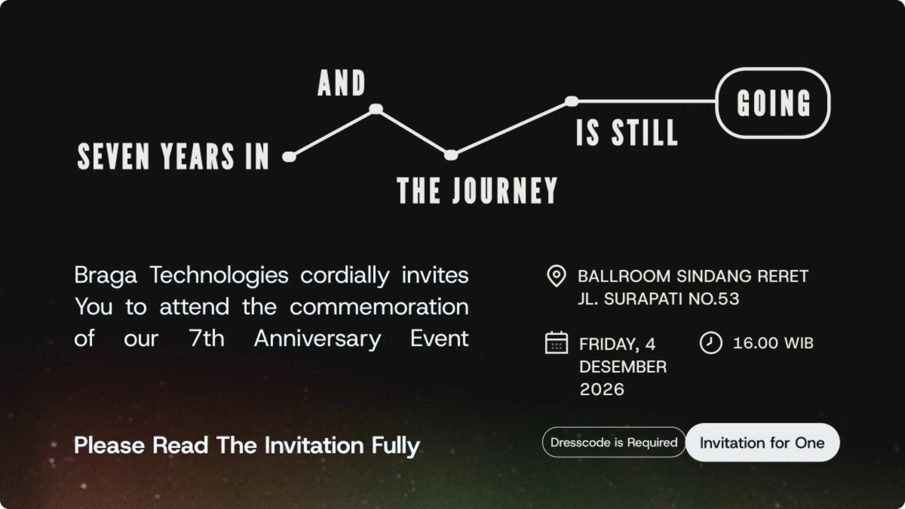
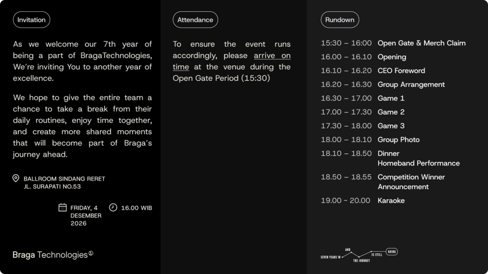
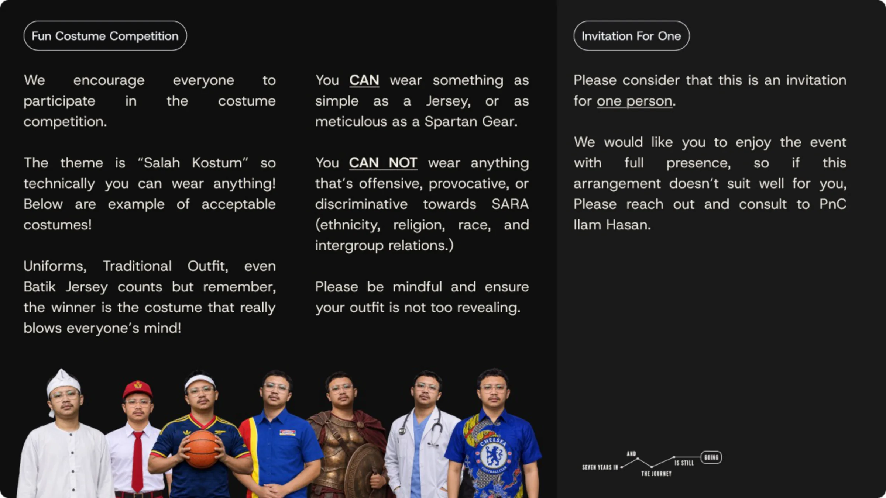

{{ st.label }}
{{ y.year }}
2026
Scroll to the end of the timeline to collect your invitation.
Crew # {{ crew.tag }}EST. {{ crew.year }}
{{ crew.name }}
{{ crew.email }}
{{ crew.title }}
NAVIGATION
drag/scroll
Hold, Drag, or Scroll the page to navigate.
Let’s traverse through the memory lane!
STELLAR-CLASSIFICATION
MEMORIES

PICTURES

STORIES


HOVER AROUND! EACH STAR REPRESENT A CORE MOMENT, BUT SOME HAVE MORE TO OFFER.
Hover Star to Interact
the journey
is still
going
Seven years in
and
See You at
BRAGA TECHNOLOGIES
7th Anniversary
Friday, 4 December 2026
Before we Embark to another years ahead
Leave a Message
for BRaga Technologies
Minimum 80, maximum 240 characters0 / 240
Scroll to the end of the timeline to collect your invitation.
the journey
is still
going
Seven years in
and

Memories
Pictures and Videos
Stories
{{ sec.idx }}
{{ sec.short }}


